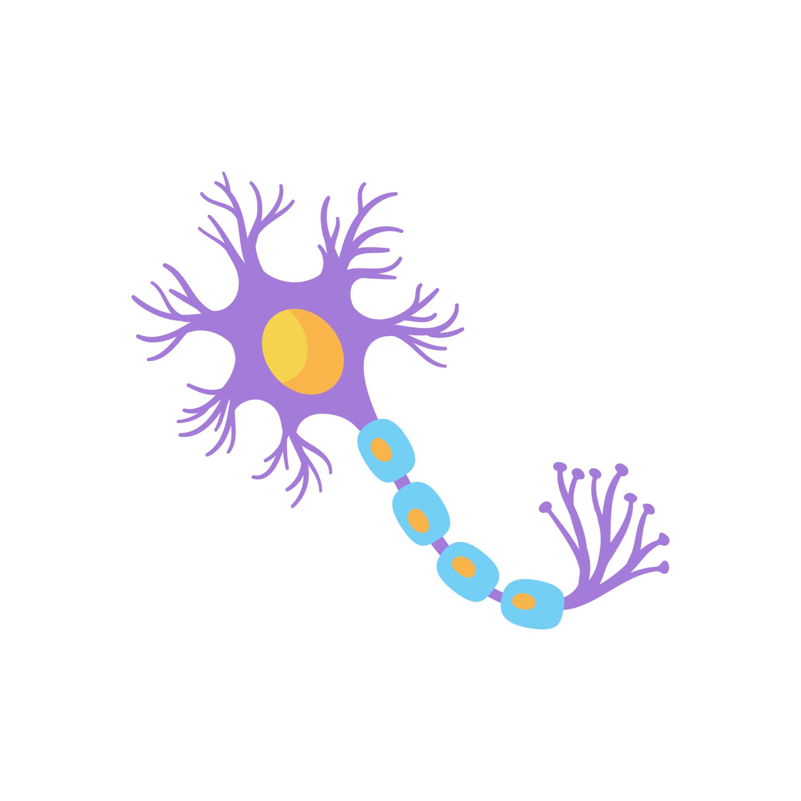

Neurônios e Sinapse
Nesse site, abordamos cada parte da principal célula do sistema nervoso, o neurônio, que é formado por: dendritos, corpo celular, axônio e também uma região de comunicação conhecida como sinapse. Logo abaixo você encontrará a nossa bio-maquete e um menu para explorar nossos vídeos informativos!
